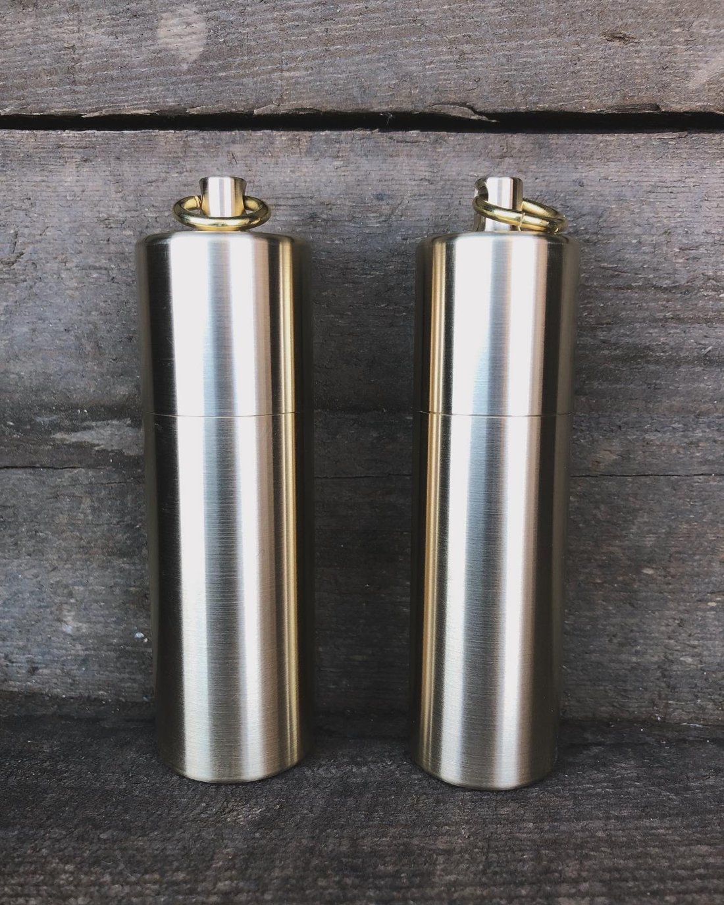
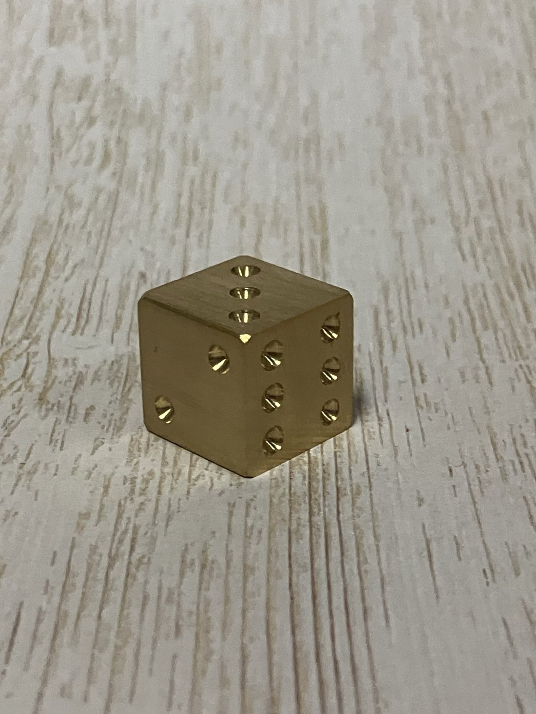
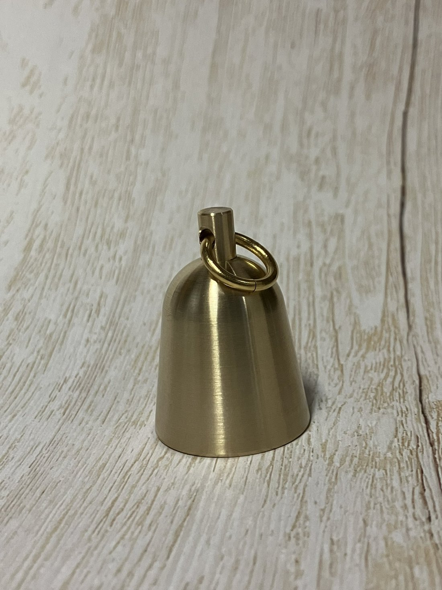
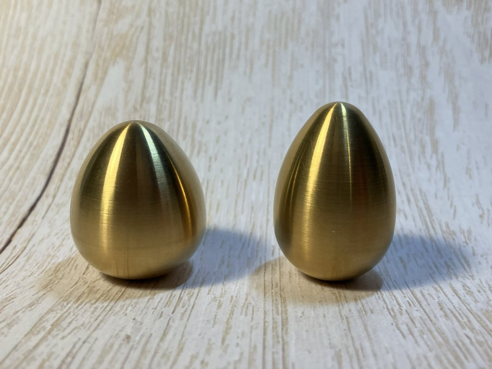
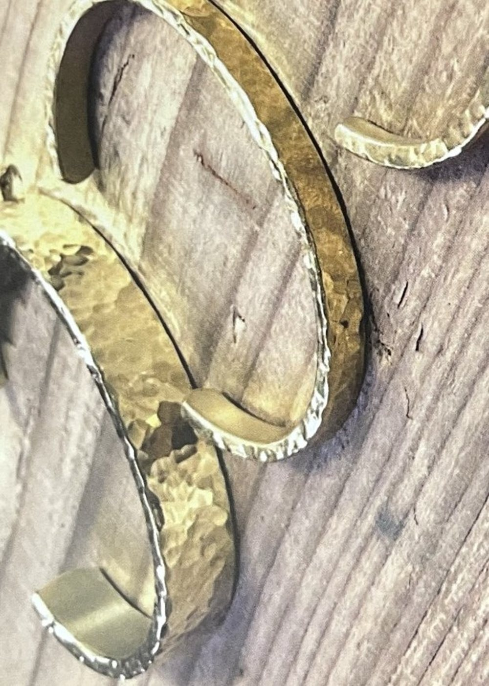
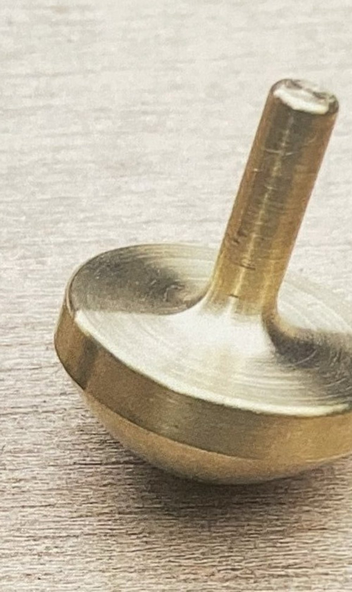

01
携帯灰皿
ネジ式でしっかり閉まる、マツバ工房の看板商品。スマートタイプとストロングタイプ。
はじめに
そんな単純な会話から産まれた、製品たち。
大手の会社ですら辞めていく今の世の中、一年通して仕事の波がすごくある。 最先端な機械もないし、もちろん他社の製品は写真すら残せない。 百行以上あるプログラムですら、頭で考えてすべて手打ち。 来年はどうなっているのかなんてわからない、小さな小さな町工場。
でもそんな小さな町工場だからこそ、アイデアさえあれば、 転がっている材料から面白いと思えるオリジナル商品を作ることが出来る。 気に入らなければ、ボツにすればよい。
『 自分たちがつくりたいと思うものだけ作る 』
Works
看板商品から、ちょっと笑える一品まで。 真鍮を削り出した、マツバ工房の作品たちです。

ネジ式でしっかり閉まる、マツバ工房の看板商品。スマートタイプとストロングタイプ。

真鍮の塊から削り出した、ずっしりと心地よい重み。振るのが楽しい人気の一品。

バイク乗りの職人がつくる、旅の安全を願うお守りのベル。ミニベルやテクスチャーも。

「真鍮で卵をつくったら、かわいくない？」から始まった、記念すべき第一作。

叩いて表情をつけたテクスチャー仕上げ。ハートやリボンなど、装いに寄り添う真鍮。

子どもから大人まで、回して遊べる真鍮の独楽。贈りものにも喜ばれる一品です。
ペットボトルホルダー、鉛筆型のこけし、ブランデー型のペーパーウェイトなど、まだまだたくさん。最新の作品はSNSと楽天市場でご覧いただけます。
Instagram で作品を見るMaterial
真鍮は、銅と亜鉛の合金。金にも似た落ち着いた輝きをもち、 使うほどに少しずつ色を深め、味わいを増していきます。
Makers
丸いものは殿、四角いものは奥方。「好き嫌い戦い」を繰り広げながら、二人の手で作品は生まれます。
丸いものが得意 ／ 旋盤担当
こだわりはとびきり強く、納得のいくまで手を止めない。バイクと釣りをこよなく愛する、ガーディアンベルの生みの親。
四角いものが得意 ／ マシニング担当
角ものは私の担当。肩の力を抜いて、日々こつこつとものづくり。二人合わせて、マツバ工房です。
Our Story
派手さはなくとも、確かな手仕事を。
マツバ工房（有限会社マツバ）は、名古屋市中川区にある小さなものづくりの町工場です。 大量にはつくれないけれど、その分ひとつひとつに目が届く。 そんな規模だからこそ生まれる、丁寧な仕事を大切にしています。
一つの製品が出来上がるまでには、いろいろな思いと工程があります。 作品たちの物語に、ぜひ気軽にお付き合いください。 これからも、真鍮のものづくりを楽しみながら続けてまいります。
Process
一点の作品が生まれるまで。すべては、手の中で。
「これ、つくったらおもしろくない？」会議から、すべてが始まります。
真鍮の地金を旋盤にかけ、必要な形を一つずつ削り出していきます。
叩き、曲げ、組む。金属に表情を与える、いちばんの手仕事。
一点ずつ丁寧に整え、納得のいく仕上がりでお届けします。
おわりに
お客様は、完成された商品を気に入って買ってくれますが、 一つの製品が出来上がるまでには、いろいろな思いや工程があって、 出来たことを知ってほしくて、この冊子をつくりました。
今回掲載した以外にも、まだまだ商品がありますが、 次回また、その子たちが産まれた経緯も含めて、皆様に紹介できたらなと思います。 書いたことで、商品たちもとても大事におもっていること、 作っている私が一番のマツバ工房のファンであることを、感じることができました。
いつまで続くかわからない、小さな小さな町工場ですが、 これからも自分たちが「つくりたい」と思う製品たちを、 挑戦してつくっていって、皆様にお届けできたらと思います。 私たちの戦いも、これからも続きます。
本当に拙い日本語で、最後までお読みいただき、本当にありがとうございました。 マツバ工房、これからもがんばりますので、末永くよろしくお願いいたします。
Shop
オンラインでも、対面でも。作品を手に取っていただけます。
マツバ工房の作品を、いつでもオンラインでご購入いただけます。在庫や新商品もこちらから。
ショップを見る ↗各地のフリマやハンドメイド作品のイベントにも出展しています。ぜひ手に取って、真鍮の質感を確かめてください。
出展情報はSNSにて日々のものづくりや、新作・出展のお知らせを発信中。最新情報はSNSが確実です。
フォローする ↗Contact
作品やオーダーメイドに関するご相談、お取り扱い・卸のお問い合わせなど、 お気軽にご連絡ください。ＳＮＳのメッセージからもお受けしています。